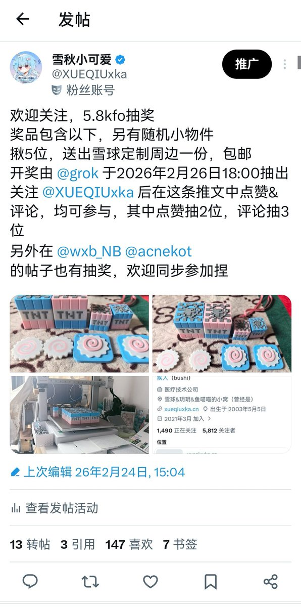
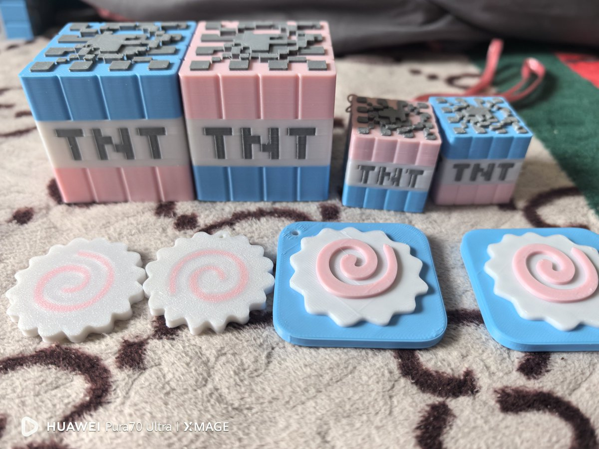

misaki
@misaki102113
@XUEQIUxka @grok 蹲


雪秋小可爱🍥
@XUEQIUxka
抽奖帖
上一次有很多人没有抽到，又很想要
于是我们又开了一期新的抽奖
揪6位，送出雪球定制周边一份，包邮
开奖由 @grok 于2026年3月15日18:00 （UTC+8）抽出
关注 @XUEQIUxka 后在这条推文中点赞&评论，均可参与，其中点赞抽2位，评论抽2位，转发抽2位
评论有概率随机掉落 https://t.co/p2e5BHd7sm